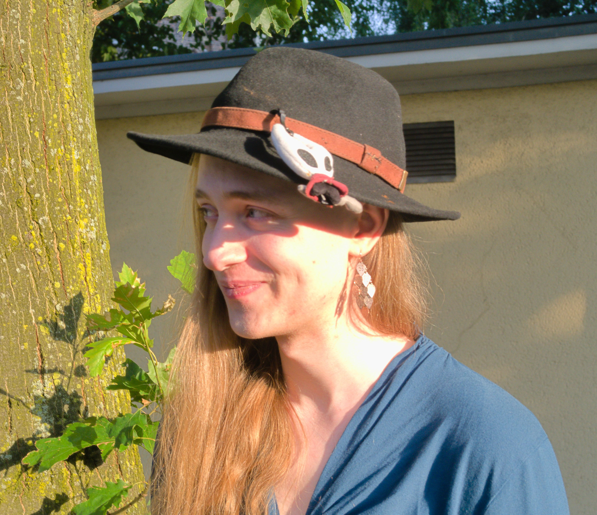

Valentin Then Bergh
Mechanics
Design
/
Gameplay
Programming
My Specialisation: I am a technical game designer from Germany. As such, I work as intermediary between game design and programming: On the design side, I contribute ideas, logic, and game mechanic prototypes — which I then translate into flowcharts for smooth implementation by programmers. On the technical side, I focus on game-feel implementation and asset organization to empower designers in crafting gameplay more easily.
Experience: I studied at the Cologne Game Lab, where I collaborated on over 5 group projects each spanning 7 or more weeks. Throughout these, I gained experience in the collaborative usage of Unity with C# (4 years) , and Unreal Engine with C++ (1 year), as well as creating analog prototypes and organizational tools, like Git, Miro, and more.
Plans: For the future, I'd like to contribute these skills in a professional environment, while learning about varying approaches for the design to programming pipeline. Therefore, I am currently seeking positions as a tech designer.